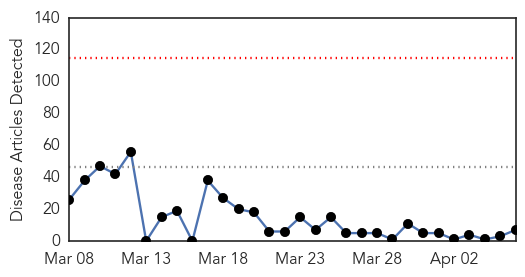
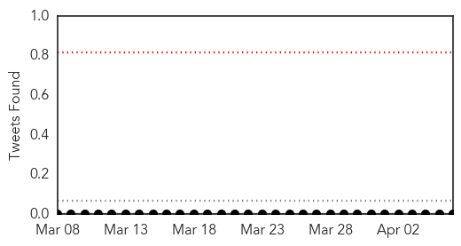
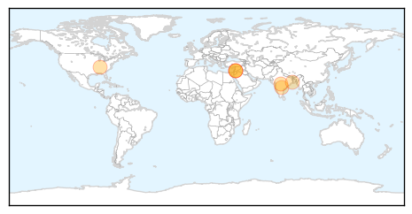
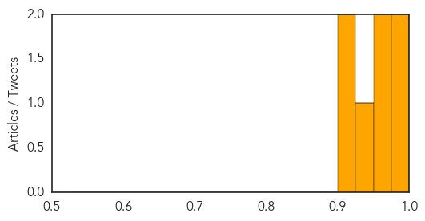

Swine Flu
30-Day Web Trend
0 alerts, 0 warnings

30-Day Twitter Trend
0 alerts, 0 warnings

Article Locations
Article Confidences
Top Articles:
- 0.997
- Hospitals see more late-season flu cases this year
- 0.996
- One more swine flu death reported
- 0.970
- How doctors hoarded vital swine flu pills
- 0.957
- Two Syrians die from H1N1 swine flu
- 0.929
- Two Syrians die from H1N1 swine flu
- 0.924
- Two Syrians die from H1N1 swine flu
- 0.920
- No fresh swine flu cases reported in Mizoram for weeks
Top Tweets:
-
No tweets found for Apr 06, 2015